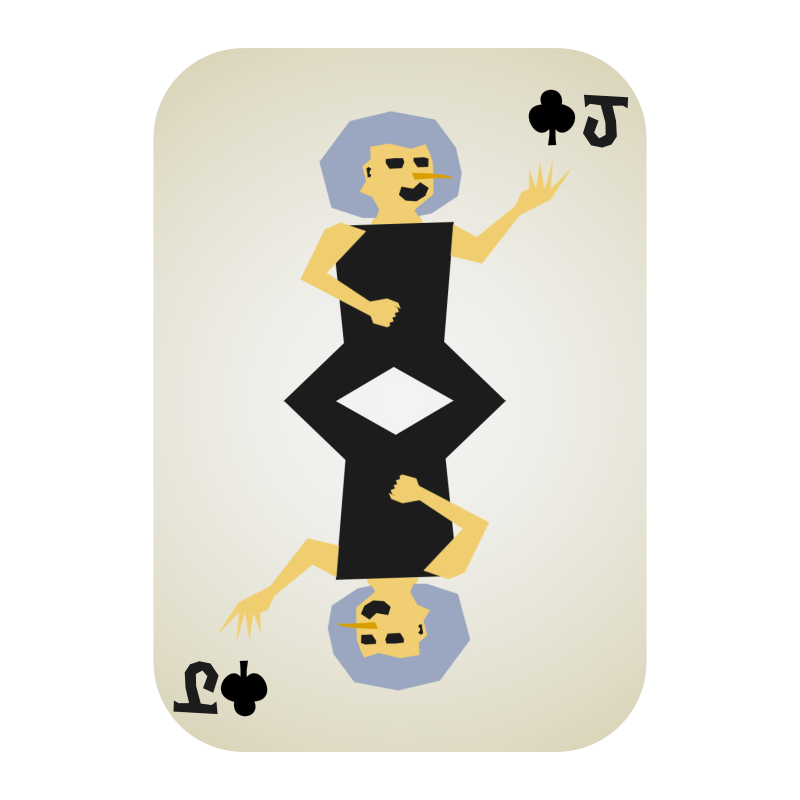
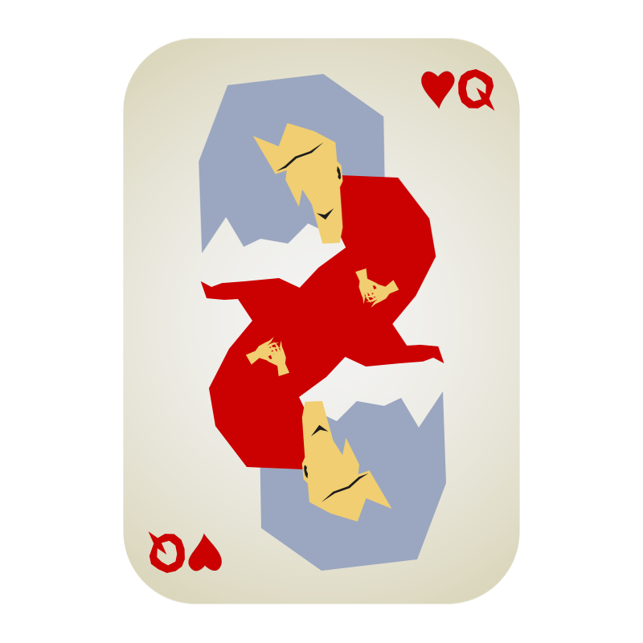
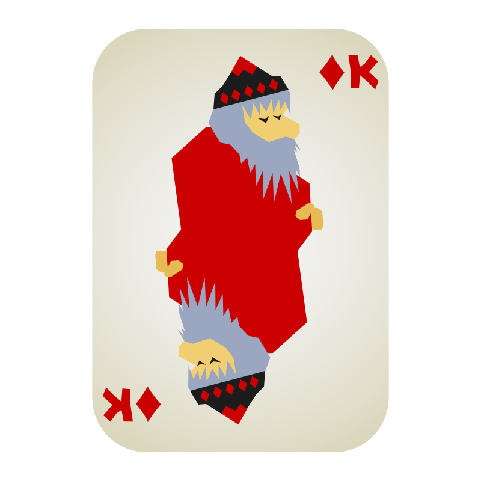
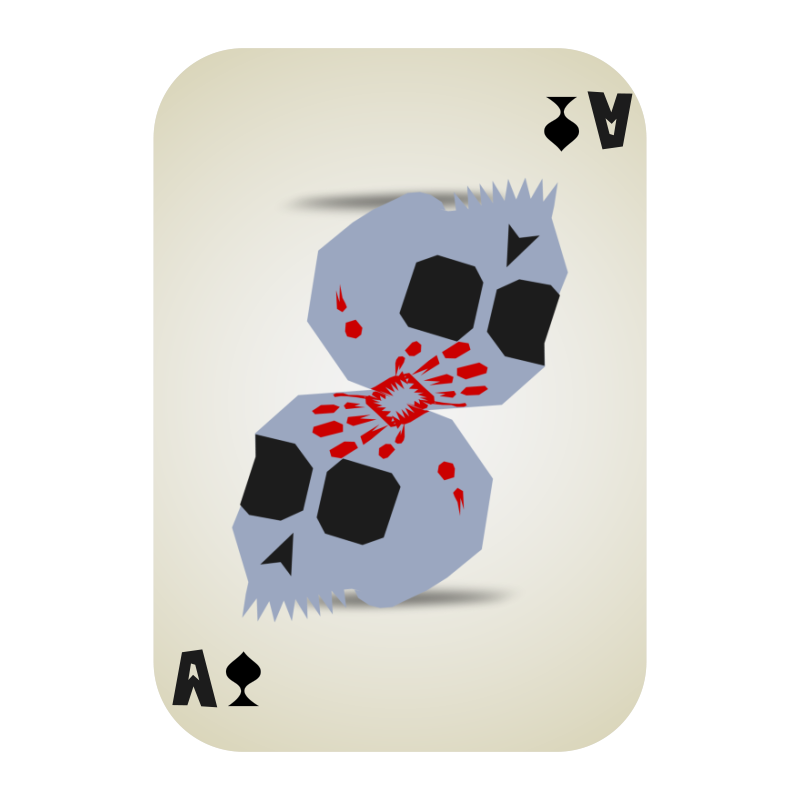

What is the Meaning of This?

Doomcrop is a game for 2+ players that can be played with a regular deck
of playing cards. All that is required is enough table space to lay out
around 20 cards.
Although luck is a component of play, sound strategy is a necessity.
You must think of yourself as the commander of a ramshackle army,
giving orders while a battle rages. Your number cards will engage your
opponents in combat, while your face cards will use their courtly
powers to influence the tides of war.
Your goal is capture your opponent's cards, while protecting your own
cards from capture. Whosoever has captured the most cards by the time
the Draw Pile runs out, wins!
Game Setup
The standard 2-player Doomcrop game uses one deck of playing cards
with the Jokers removed.
(Please see the Optional Rules section
to play with more players, more decks, or more Jokers.)
Shuffle the deck and deal 10 cards to each player, facedown.
Look at your cards arrange 9 of them into a 3-by-3 grid.
You may look at your own facedown cards at any time.
Take the 10th card and start your Discard pile, face-up. It should be
separate from your opponent's Discard pile. Cards in your Discard pile
cannot return to play, so choose your 10th card carefully.
Place the rest of the shuffled deck facedown between players.
This is the shared Draw pile.
Whichever player discarded the card with the lowest value goes first.
For this, Face cards have a higher value than all Numbers, and Diamond
Numbers are more valuable than equal Numbers that are non-Diamonds.
In the case of a tie, flip a coin.

Turn Order
On your turn, choose a card in your grid to flip face-up. If it's a Number, you attack.
If it's a Face card, you activate its ability. If you capture a card,
put it in your Discard pile face-up and immediately replace it with a facedown card
from the top of the Draw pile.
After all captured cards have been replaced, pass the turn to your opponent.
Number Cards
Opposition
Each card in your grid has its opposite in your opponent's grid.
To oppose each other, the two cards must be equally close to the Line of Opposition
between the two grids, and they must be directly aligned with each other.
Each card is the mirror of its opposite.
Most Number cards may only attack their Opposing card. Clubs Numbers
have extended range (see below).
Numerological Combat
Statistically speaking, the majority of the deck is Number cards.
Think of them as your rank-and-file troops. All they know is combat.
Flip a Number card face-up to attack its Opposing card.
If its Opposing card is facedown, flip it face-up as well.
If the Opposing card is a Number and:
- you have the higher Number, you capture the Opposing card!
- you have the lower Number, the opponent captures your card.
- the numbers are tied, both cards remain face-up on the board.
If the Opposing card is revealed to be a Face card, it may not use
its special ability (unless it is turned facedown again by a Queen).
Face cards can only be captured by any Number 2, or
any Number whose suit matches the Face card. A Face
that is attacked by any other Number must remain on the
board until it is captured by a capable Number or an Ace.
The Number 2 has another unique trait: it is the only Number that
can capture a Number 10.

Hearts win.
Suit Abilities
Number cards have special abilities afforded by their suits. Suit abilities do not apply to Face cards.
Spades
Spades number cards are like zealous fanatics, willing to die for their cause. Once per turn, before you flip a card, you may capture any one Spades card in your grid, face-up or facedown.
Clubs
Clubs are like archers and bottle-throwers, attacking from a distance. When a Clubs card attacks, you may choose to attack any card it is directly aligned with, instead of its Opposing card.
Diamonds
Diamonds are like merchants and thieves, using the chaos to gather wealth. When you count out Discard piles at the end of the game, each Diamonds card counts as two cards.
Hearts
Hearts are like warriors who share a powerful bond. When one of your Hearts cards is attacked, if there is a facedown Hearts card adjacent to it, you may flip that Hearts face-up and add its value to that of the defending Hearts card. If their combined value exceeds 10, an attacking Number 10 may be captured, even if a Number 2 is not involved.
Face Card Abilities
Face cards represent the powerful, the connected, and the inevitable.
Flip a Face card face-up to activate its special ability.
After you resolve a Face card's ability, capture the Face card.
The Jack
When you flip a Jack, you may swap the places of your own cards, one-for-one, three times. You may make fewer swaps, swap the same two cards up to three times, and/or swap the Jack. You may not turn any cards face-up or facedown during this process.
The Queen
When you flip a Queen, turn up to three of your cards facedown.
The King
When you flip a King, flip each of your facedown Number cards face-up, one-by-one, and resolve Numerological Combat with their Opposing cards accordingly. Clubs numbers may use their ability. The King also attacks when activating this ability. Consider the King a 7 if it's opposed to a Number. A King cannot capture another Face card this way. Your number cards that were previously face-up do not attack.
The Ace
When you flip an Ace, instantly capture any face-up or facedown card on the board, or the top card of the Draw pile.
What if...
All of My Cards Are Face-up?
In the unlikely event that either player begins their turn with all of their own cards face-up, both players immediately capture all of their own cards, draw 9 cards from the Draw pile, and build their grid again facedown.
I Don't Have Any Good Moves?
Due to the randomness of a shuffled deck, this situation will occur from time to time. Look for a Spade you can sacrifice to refresh your grid. If you have to let your opponent capture a card of yours, try to avoid giving them a Diamond. If you have a King handy, the benefits you get from drawing several new cards may outweigh the points you give your opponent.
Ending the Game
When the Draw pile runs out, immediately capture all of your own Face cards,
both face-up and facedown. Then flip any remaining cards face-up and resolve
all Numerological Combats, including between cards that were already face-up.
If you have any cards left, you capture them.
Count out the amount of cards in your Discard pile. Card values do not
matter, but remember to count Diamond numbers as two cards. Whosoever
has captured the most cards, wins!
Congratulations
You played Doomcrop
Coming Later

Greetings traveler

Doomcrop was designed by Riley Adamson. You can call me Riles. I live in LA and organize files on some good TV shows. I made all the Doomcrop art in After Effects and converted some to SVG animations with Lottie. I know that's kind of a roundabout way to get it done. I'm studying front-end design and functional programming at My Bedroom Late At Night University.
Doomcrop To-Do List
- Replace all placeholder guys with new art
- Thorough test of gameplay
- Clarified rules on Face cards in combat
- Clarified the some Face card abilities
- Added "What if?" section
- Simplified rules for ending the game
- Added rules for cases where numbers are tied in combat
- Added rules for cases where all cards are face-up
- Added rules to determine which player goes first
- Updated rules for ending the game
- Rebalanced Face card rules to mitigate board stagnation
- Rebalanced Hearts suit ability to improve usefulness
- Clarified Spades suit ability
- Emphasized player's ability to always view their own cards
- Updated Optional Rules section
- Video explaining the rules of the game
- Interactive web-based Doomcrop vs. AI and other players
- Employ artists to make the cards look better
- Secret plans go here...
- Changelog 09/29/20 - Version 1.2
- Changelog 09/27/20 - Version 1.1
You Can Support Doomcrop
Playing with Multiple Decks
Doomcrop can be played with more than one deck of cards.
- Players may shuffle multiple decks together to form the Draw pile. This is workable even if the decks' back-face art doesn't match.
- If players want their own individual Draw piles, these can be dealt out evenly from the shared Draw pile at the start of the game.
- Players may use multiple decks to form individual Draw piles, as long as each player has an equal amount of cards at the start of the game.
Playing with 3+ Players
With more than 2 players, it is recommended to use multiple
decks as outlined above.
When playing Doomcrop with 3 or more players, determining Opposing cards
is more complicated. You now have multiple axii of opposition. With 3
players, you have an axis on both sides of your grid. With 4 players,
you also have the original top row axis.
With odd numbers of players, players may only attack the opponents
directly to their left and right. With even numbers of players greater than 4,
players may also attack the opponent directly opposite them.
It is recommended that players amend this as a house rule if they wish
to be able to skip players when attacking.
Playing with Jokers
Unlike other Face cards, the Joker can be captured by any Number card.
When you flip a Joker face-up, or when you capture a Joker,
roll a 6-sided die and obey the table below.
- Players swap sides of the board.
- Players swap Discard piles.
- Each player captures all of their own cards and deals a new 3-by-3 square.
- All face cards are activated, including face-up ones.
- Each player shuffles their own cards together and deals their 3-by-3 square randomly, facedown.
- For the rest of the game, play with the top card of the Draw pile face-up.
Epic Techniques
If you want to add Epic Tech to your game, observe the following rules. Activate these techniques before you flip a card on your turn. The cards do not need to be face-up to activate these techniques.
- If your grid contains 4 Hearts cards in a square, you may turn any amount of them facedown.
- If your grid contains 4 Diamonds cards in a square, you may flip any amount of their Opposing cards face-up. No other abilities are activated.
- If your grid contains 4 Spades cards in a square, you may capture any amount of them.
- If your grid contains 4 Clubs cards in a square, you may flip any amount of them face-up, and attack any cards they could normally attack.